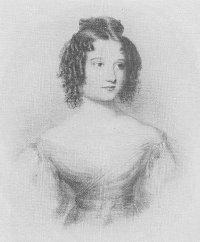

Mulheres na tecnologia (Versão beta)(Clique aqui e acesse a versão completa)
Vamos falar um pouco sobre as mulheres na tecnolia, selecionei 3 que eu considero as mais importantes para essa area
As 3 mulheres mais influentes na história da tecnologia:
- Ada Lovalace
- Hedy Lamarr
- Sheryl Sandberg
Vamos falar um pouco sobre ela:
Ada Lovalace
Augusta Ada Byron King, atualmente conhecida como Ada Lovelace, nasceu em 10 de Dezembro de 1815, em Londres na Inglaterra.
Ada foi uma matemática e escritora, responsável por escrever aquele que veio a ser conhecido como o primeiro algoritmo de computador da história.
Filha de George Gordon Byron, 6º Barão de Byron (Conhecido como Lord Byron), e Annabela Byron, Lady Wentworth,
Lovelace teve uma infância abastada e muito confortável financeiramente, tendo se tornado ao longo de sua vida muito próxima da corte da rainha Vitória.
